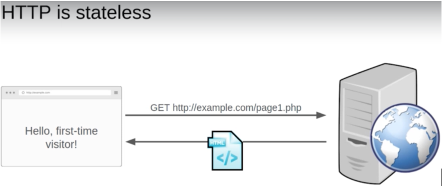
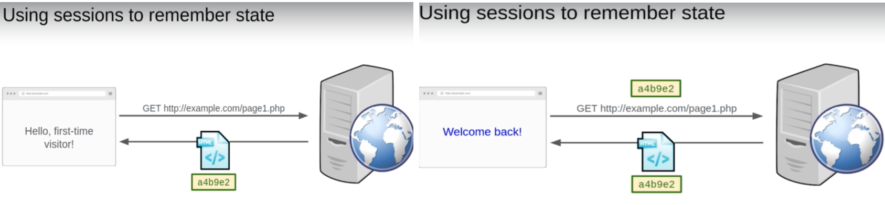
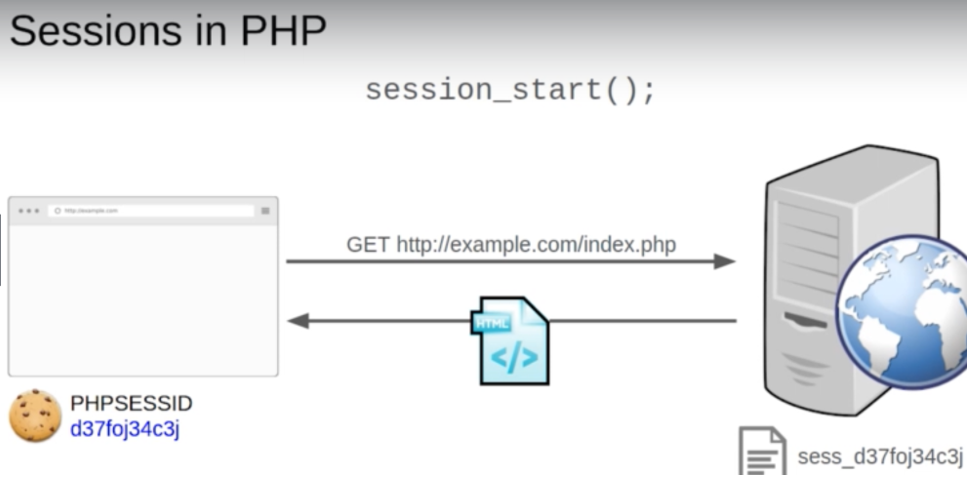

<!DOCTYPE html>
<html>
<head><meta name="generator" content="Hexo 3.8.0">
  <!-- hexo-inject:begin --><!-- hexo-inject:end --><meta charset="utf-8">
  

  
  <title>PHP Study Notes - Session | TongTong Shi&#39;s Blog</title>
  <meta name="viewport" content="width=device-width, initial-scale=1, maximum-scale=1">
  <meta name="description" content="Session in PHP official documentation  1. Sessions &amp;amp; Cookies  Session: a chunk of data maintained at the server that maintains state between HTTP requests. Features:   No storage limit. Not easil">
<meta name="keywords" content="PHP">
<meta property="og:type" content="article">
<meta property="og:title" content="PHP Study Notes - Session">
<meta property="og:url" content="http://yoursite.com/2019/09/10/php-session/index.html">
<meta property="og:site_name" content="TongTong Shi&#39;s Blog">
<meta property="og:description" content="Session in PHP official documentation  1. Sessions &amp;amp; Cookies  Session: a chunk of data maintained at the server that maintains state between HTTP requests. Features:   No storage limit. Not easil">
<meta property="og:locale" content="default">
<meta property="og:image" content="http://yoursite.com/2019/09/10/php-session/session1.png">
<meta property="og:image" content="http://yoursite.com/2019/09/10/php-session/session2.png">
<meta property="og:image" content="http://yoursite.com/2019/09/10/php-session/session3.png">
<meta property="og:updated_time" content="2019-09-11T16:56:01.241Z">
<meta name="twitter:card" content="summary">
<meta name="twitter:title" content="PHP Study Notes - Session">
<meta name="twitter:description" content="Session in PHP official documentation  1. Sessions &amp;amp; Cookies  Session: a chunk of data maintained at the server that maintains state between HTTP requests. Features:   No storage limit. Not easil">
<meta name="twitter:image" content="http://yoursite.com/2019/09/10/php-session/session1.png">
  
    <link rel="alternate" href="/atom.xml" title="TongTong Shi&#39;s Blog" type="application/atom+xml">
  
  
    <link rel="icon" href="/favicon.png">
  
  
    <link href="//fonts.googleapis.com/css?family=Source+Code+Pro" rel="stylesheet" type="text/css">
  
  <link rel="stylesheet" href="/css/style.css"><!-- hexo-inject:begin --><!-- hexo-inject:end -->
</head>
</html>
<body>
  <!-- hexo-inject:begin --><!-- hexo-inject:end --><div id="container">
    <div id="wrap">
      <header id="header">
  <div id="banner"></div>
  <div id="header-outer" class="outer">
    <div id="header-title" class="inner">
      <h1 id="logo-wrap">
        <a href="/" id="logo">TongTong Shi&#39;s Blog</a>
      </h1>
      
    </div>
    <div id="header-inner" class="inner">
      <nav id="main-nav">
        <a id="main-nav-toggle" class="nav-icon"></a>
        
          <a class="main-nav-link" href="/">Home</a>
        
          <a class="main-nav-link" href="/archives">Archives</a>
        
      </nav>
      <nav id="sub-nav">
        
          <a id="nav-rss-link" class="nav-icon" href="/atom.xml" title="RSS Feed"></a>
        
        <a id="nav-search-btn" class="nav-icon" title="Search"></a>
      </nav>
      <div id="search-form-wrap">
        <form action="//google.com/search" method="get" accept-charset="UTF-8" class="search-form"><input type="search" name="q" class="search-form-input" placeholder="Search"><button type="submit" class="search-form-submit">&#xF002;</button><input type="hidden" name="sitesearch" value="http://yoursite.com"></form>
      </div>
    </div>
  </div>
</header>
      <div class="outer">
        <section id="main"><article id="post-php-session" class="article article-type-post" itemscope itemprop="blogPost">
  <div class="article-meta">
    <a href="/2019/09/10/php-session/" class="article-date">
  <time datetime="2019-09-10T21:37:08.000Z" itemprop="datePublished">2019-09-10</time>
</a>
    
  </div>
  <div class="article-inner">
    
    
      <header class="article-header">
        
  
    <h1 class="article-title" itemprop="name">
      PHP Study Notes - Session
    </h1>
  

      </header>
    
    <div class="article-entry" itemprop="articleBody">
      
        <h3 id="session-in-php"><a class="markdownIt-Anchor" href="#session-in-php"></a> Session in PHP</h3>
<a href="https://www.php.net/manual/en/intro.session.php" target="_blank" rel="noopener">official documentation</a>
<h4 id="font-colordodgerblue1-sessions-cookiesfont"><a class="markdownIt-Anchor" href="#font-colordodgerblue1-sessions-cookiesfont"></a> <font color="dodgerblue">1. Sessions &amp; Cookies</font></h4>
<ul>
<li><font color="slateblue"><strong>Session</strong>: a chunk of data maintained at the server that maintains state between HTTP requests. Features: </font>
<ul>
<li><font color="DARKTURQUOISE">No storage limit.</font></li>
<li><font color="DARKTURQUOISE">Not easily accessible.</font></li>
<li><font color="DARKTURQUOISE">Type of values can store in a session? <strong>Any type (number, string, array,…)</strong></font></li>
</ul>
</li>
</ul>
<a id="more"></a>
<ul>
<li><font color="slateblue"><strong>Cookie</strong>: a bit of data stored by the browser and sent to the server with every request. It is often used to facilitate sessions since it tells the server which client handles which session.</font>
<ul>
<li><font color="MEDIUMSEAGREEN">Store limited amount of data.</font></li>
<li><font color="MEDIUMSEAGREEN">Easily sccessible so less secure.</font></li>
<li><font color="MEDIUMSEAGREEN">Type of values can store in a session? <strong>String</strong> </font></li>
</ul>
</li>
</ul>

Since HTTP is stateless, session is always used to remember state. 

And cookies are used to identify sessions.

<h4 id="font-colordodgerblue2-sessions-in-phpfont"><a class="markdownIt-Anchor" href="#font-colordodgerblue2-sessions-in-phpfont"></a> <font color="dodgerblue">2. Sessions in PHP</font></h4>
<p>Session support in PHP consists of a way to preserve certain data across subsequent accesses. The session support allows us to store data between requests in the <font color="LIMEGREEN"><strong><code>$_SESSION</code></strong></font> superglobal array. When a visitor access a site, PHP will check automatically or on your request (explicitly through <code>session_start()</code>) whether a specific session id has been sent with the request. If this is the case, the prior saved environment is recreated.</p>
<p><font color="dodgerblue"><strong>Basic usage:</strong></font></p>
<p>Sessions can be started manully using the <code>session_start()</code> function. If the <code>session.auto_start</code> directive is set to 1, a sessio will automatically start on request startup.</p>
<p>Sessions shutdown automatically when PHP is finished executing a script, but can be manully shutdown using the <code>session_write_close()</code> function.</p>
<p><strong>Example:</strong></p>
<figure class="highlight php"><table><tr><td class="gutter"><pre><span class="line">1</span><br><span class="line">2</span><br><span class="line">3</span><br><span class="line">4</span><br><span class="line">5</span><br><span class="line">6</span><br><span class="line">7</span><br><span class="line">8</span><br><span class="line">9</span><br><span class="line">10</span><br></pre></td><td class="code"><pre><span class="line"><span class="meta">&lt;?php</span></span><br><span class="line"></span><br><span class="line"><span class="comment">// store a variable count, record the visiting times to a page</span></span><br><span class="line">    sesseion_start();</span><br><span class="line"></span><br><span class="line">    <span class="keyword">if</span> (<span class="keyword">isset</span>($_SESSION[<span class="string">'count'</span>])) &#123;</span><br><span class="line">        $_SESSION[<span class="string">'count'</span>]++;</span><br><span class="line">    &#125; <span class="keyword">else</span> &#123;</span><br><span class="line">    	$_SESSION[<span class="string">'count'</span>] = <span class="number">1</span>;</span><br><span class="line">    &#125;</span><br></pre></td></tr></table></figure>
<p><font color="tomato"><strong>Note:</strong><br>
When working with sessions that a record of a session is not created until a variable has been registered using the <code>session_register()</code> function or by adding a new key to the <code>$_SESSION</code> superglobal array. This holds true regardless of if a session has been started using the <code>session_start()</code> function.</font></p>
<p><font color="dodgerblue"><strong>Passing the Session ID:</strong></font></p>
<p>There are two ways to propagate a sessio id: Cookies and URL parameter.</p>
<p><font color="dodgerblue"><strong>Session Functions:</strong></font></p>
<ul>
<li><code>session_regenerate_id</code> : replace the current session id with a new one, and keep the current session information.</li>
<li><code>session_destroy</code> : destroy all of the data associated with the current session. It does <strong>not</strong> unset any of the global variables associated with the session, or <strong>unset</strong> the session cookie. To use the session variables again, session_start() has to be called.</li>
<li><code>setcookie</code> : define a cookie to be sent along with the rest of the HTTP headers. Once the cookies have been set, they can be accessed on the next page load with the <code>$_COOKIE</code> array. Cookie values may also exist in <code>$_REQUEST</code>.</li>
<li><code>session_get_cookie_params</code> : get the session cookie parameters.</li>
</ul>
<p><font color="dodgerblue"><strong>How to destroy global variables associated with the session?</strong></font></p>
<ol>
<li>Unset all the session variables.</li>
<li>Delete the session cookie.</li>
<li>Destroy the session.</li>
</ol>
<details>
	<summary>CODE</summary>
<figure class="highlight php"><table><tr><td class="gutter"><pre><span class="line">1</span><br><span class="line">2</span><br><span class="line">3</span><br><span class="line">4</span><br><span class="line">5</span><br><span class="line">6</span><br><span class="line">7</span><br><span class="line">8</span><br><span class="line">9</span><br><span class="line">10</span><br><span class="line">11</span><br><span class="line">12</span><br><span class="line">13</span><br><span class="line">14</span><br><span class="line">15</span><br><span class="line">16</span><br><span class="line">17</span><br><span class="line">18</span><br></pre></td><td class="code"><pre><span class="line"><span class="keyword">public</span> <span class="keyword">static</span> <span class="function"><span class="keyword">function</span> <span class="title">logout</span><span class="params">()</span></span></span><br><span class="line"><span class="function"></span>&#123;</span><br><span class="line">    <span class="comment">// Unset all of the session variables.</span></span><br><span class="line">    $_SESSION = <span class="keyword">array</span>();</span><br><span class="line"></span><br><span class="line">    <span class="comment">// If it's desired to kill the session, also delete the session cookie.</span></span><br><span class="line">    <span class="comment">// <span class="doctag">Note:</span> This will destroy the session, and not just the session data!</span></span><br><span class="line">    <span class="keyword">if</span> (ini_get(<span class="string">"session.use_cookies"</span>)) &#123;</span><br><span class="line">        $params = session_get_cookie_params();</span><br><span class="line">        setcookie(session_name(), <span class="string">''</span>, time() - <span class="number">42000</span>,</span><br><span class="line">            $params[<span class="string">"path"</span>], $params[<span class="string">"domain"</span>],</span><br><span class="line">            $params[<span class="string">"secure"</span>], $params[<span class="string">"httponly"</span>]</span><br><span class="line">        );</span><br><span class="line">    &#125;</span><br><span class="line"></span><br><span class="line">    <span class="comment">// Finally, destroy the session.</span></span><br><span class="line">    session_destroy();</span><br><span class="line">&#125;</span><br></pre></td></tr></table></figure>
</details>

      
    </div>
    <footer class="article-footer">
      <a data-url="http://yoursite.com/2019/09/10/php-session/" data-id="ck0yc65jt00sbfkvekvt2uxxj" class="article-share-link">Share</a>
      
      
  <ul class="article-tag-list"><li class="article-tag-list-item"><a class="article-tag-list-link" href="/tags/PHP/">PHP</a></li></ul>

    </footer>
  </div>
  
    
<nav id="article-nav">
  
    <a href="/2019/09/11/php-ajax/" id="article-nav-newer" class="article-nav-link-wrap">
      <strong class="article-nav-caption">Newer</strong>
      <div class="article-nav-title">
        
          PHP Study Notes - Ajax
        
      </div>
    </a>
  
  
    <a href="/2019/09/10/php-pdo/" id="article-nav-older" class="article-nav-link-wrap">
      <strong class="article-nav-caption">Older</strong>
      <div class="article-nav-title">PHP Study Notes - PDO</div>
    </a>
  
</nav>

  
</article>

</section>
        
          <aside id="sidebar">
  
    
  <div class="widget-wrap">
    <h3 class="widget-title">Tag Cloud</h3>
    <div class="widget tagcloud">
      <a href="/tags/Angular/" style="font-size: 15.42px;">Angular</a> <a href="/tags/Array/" style="font-size: 17.5px;">Array</a> <a href="/tags/BFS/" style="font-size: 16.67px;">BFS</a> <a href="/tags/BST/" style="font-size: 12.5px;">BST</a> <a href="/tags/Backtracking/" style="font-size: 16.25px;">Backtracking</a> <a href="/tags/Binary-Search/" style="font-size: 15.83px;">Binary Search</a> <a href="/tags/Binary-Search-Tree/" style="font-size: 10.42px;">Binary Search Tree</a> <a href="/tags/Bucket-Sort/" style="font-size: 10.83px;">Bucket Sort</a> <a href="/tags/Cantor-Unfold/" style="font-size: 10px;">Cantor Unfold</a> <a href="/tags/Cat1-Cat1-1/" style="font-size: 10px;">Cat1,Cat1.1</a> <a href="/tags/Cat2/" style="font-size: 10px;">Cat2</a> <a href="/tags/Cat3/" style="font-size: 10px;">Cat3</a> <a href="/tags/Combination/" style="font-size: 12.92px;">Combination</a> <a href="/tags/Counting-Sort/" style="font-size: 10.83px;">Counting Sort</a> <a href="/tags/DFS/" style="font-size: 17.92px;">DFS</a> <a href="/tags/DP/" style="font-size: 19.58px;">DP</a> <a href="/tags/Data-Structure/" style="font-size: 10px;">Data Structure</a> <a href="/tags/Database/" style="font-size: 11.25px;">Database</a> <a href="/tags/Design/" style="font-size: 15.42px;">Design</a> <a href="/tags/Design-Pattern/" style="font-size: 11.67px;">Design Pattern</a> <a href="/tags/Disjoint-Set/" style="font-size: 14.17px;">Disjoint Set</a> <a href="/tags/Divide-and-Conquer/" style="font-size: 10px;">Divide and Conquer</a> <a href="/tags/Graph/" style="font-size: 10px;">Graph</a> <a href="/tags/Greedy/" style="font-size: 18.75px;">Greedy</a> <a href="/tags/HashTable/" style="font-size: 18.33px;">HashTable</a> <a href="/tags/Heap/" style="font-size: 12.92px;">Heap</a> <a href="/tags/Integer-Overflow/" style="font-size: 10.42px;">Integer Overflow</a> <a href="/tags/JQuery/" style="font-size: 10px;">JQuery</a> <a href="/tags/Java-Baisc/" style="font-size: 10px;">Java Baisc</a> <a href="/tags/Java-Basic/" style="font-size: 11.67px;">Java Basic</a> <a href="/tags/KMP/" style="font-size: 10px;">KMP</a> <a href="/tags/KMP-algorithm/" style="font-size: 10px;">KMP algorithm</a> <a href="/tags/LeetCode/" style="font-size: 20px;">LeetCode</a> <a href="/tags/Linked-List/" style="font-size: 11.25px;">Linked List</a> <a href="/tags/LinkedList/" style="font-size: 10.83px;">LinkedList</a> <a href="/tags/LintCode/" style="font-size: 16.25px;">LintCode</a> <a href="/tags/Math/" style="font-size: 19.17px;">Math</a> <a href="/tags/Memorization/" style="font-size: 11.67px;">Memorization</a> <a href="/tags/Merge-Sort/" style="font-size: 10px;">Merge Sort</a> <a href="/tags/Monotonous-Stack/" style="font-size: 14.17px;">Monotonous Stack</a> <a href="/tags/Multiplication/" style="font-size: 10.42px;">Multiplication</a> <a href="/tags/MyBatis/" style="font-size: 12.5px;">MyBatis</a> <a href="/tags/MySQL/" style="font-size: 10.42px;">MySQL</a> <a href="/tags/MySql/" style="font-size: 10px;">MySql</a> <a href="/tags/Number-Theoretic-Algorithm/" style="font-size: 10px;">Number-Theoretic Algorithm</a> <a href="/tags/OOD/" style="font-size: 10px;">OOD</a> <a href="/tags/PHP/" style="font-size: 11.25px;">PHP</a> <a href="/tags/Partition/" style="font-size: 11.25px;">Partition</a> <a href="/tags/Permutation/" style="font-size: 10.83px;">Permutation</a> <a href="/tags/Project/" style="font-size: 15px;">Project</a> <a href="/tags/PropertyPlaceholderConfigurer/" style="font-size: 10px;">PropertyPlaceholderConfigurer</a> <a href="/tags/Queue/" style="font-size: 10px;">Queue</a> <a href="/tags/Quick-Select/" style="font-size: 10px;">Quick Select</a> <a href="/tags/Recursion/" style="font-size: 12.08px;">Recursion</a> <a href="/tags/Recurtion/" style="font-size: 10px;">Recurtion</a> <a href="/tags/Reflection/" style="font-size: 10px;">Reflection</a> <a href="/tags/SQL/" style="font-size: 10.42px;">SQL</a> <a href="/tags/SSM/" style="font-size: 12.08px;">SSM</a> <a href="/tags/Sliding-Window/" style="font-size: 13.75px;">Sliding Window</a> <a href="/tags/Sort/" style="font-size: 13.33px;">Sort</a> <a href="/tags/Spring/" style="font-size: 12.5px;">Spring</a> <a href="/tags/Spring-Boot/" style="font-size: 12.92px;">Spring Boot</a> <a href="/tags/Spring-Security/" style="font-size: 10.42px;">Spring Security</a> <a href="/tags/SpringMVC/" style="font-size: 12.08px;">SpringMVC</a> <a href="/tags/Stack/" style="font-size: 17.08px;">Stack</a> <a href="/tags/String/" style="font-size: 16.25px;">String</a> <a href="/tags/Sweep-Line/" style="font-size: 10.42px;">Sweep Line</a> <a href="/tags/Thread/" style="font-size: 11.67px;">Thread</a> <a href="/tags/Top-Interview-Qs/" style="font-size: 11.25px;">Top Interview Qs</a> <a href="/tags/Topology-Sorting/" style="font-size: 11.67px;">Topology Sorting</a> <a href="/tags/Tree/" style="font-size: 18.75px;">Tree</a> <a href="/tags/Trie/" style="font-size: 11.25px;">Trie</a> <a href="/tags/Two-Pointers/" style="font-size: 16.25px;">Two Pointers</a> <a href="/tags/Union-Find/" style="font-size: 14.58px;">Union Find</a> <a href="/tags/backtracking/" style="font-size: 10.42px;">backtracking</a> <a href="/tags/gcd/" style="font-size: 10px;">gcd</a>
    </div>
  </div>

  
    
  <div class="widget-wrap">
    <h3 class="widget-title">Archives</h3>
    <div class="widget">
      <ul class="archive-list"><li class="archive-list-item"><a class="archive-list-link" href="/archives/2019/09/">September 2019</a></li><li class="archive-list-item"><a class="archive-list-link" href="/archives/2019/08/">August 2019</a></li><li class="archive-list-item"><a class="archive-list-link" href="/archives/2019/07/">July 2019</a></li><li class="archive-list-item"><a class="archive-list-link" href="/archives/2019/06/">June 2019</a></li><li class="archive-list-item"><a class="archive-list-link" href="/archives/2019/05/">May 2019</a></li><li class="archive-list-item"><a class="archive-list-link" href="/archives/2019/04/">April 2019</a></li></ul>
    </div>
  </div>


  
    
  <div class="widget-wrap">
    <h3 class="widget-title">Recent Posts</h3>
    <div class="widget">
      <ul>
        
          <li>
            <a href="/2019/09/24/observer-design-pattern/">Observer Design Pattern = Publishers + Subscribers</a>
          </li>
        
          <li>
            <a href="/2019/09/24/builder-design-pattern/">Builder Design Pattern</a>
          </li>
        
          <li>
            <a href="/2019/09/11/php-ajax/">PHP Study Notes - Ajax</a>
          </li>
        
          <li>
            <a href="/2019/09/10/php-session/">PHP Study Notes - Session</a>
          </li>
        
          <li>
            <a href="/2019/09/10/php-pdo/">PHP Study Notes - PDO</a>
          </li>
        
      </ul>
    </div>
  </div>

  
</aside>
        
      </div>
      <footer id="footer">
  
  <div class="outer">
    <span id="footer-info" class="inner">
      &copy; 2019 Tong Shi<br>
      Powered by <a href="http://hexo.io/" target="_blank">Hexo</a>
    </span>
  </div>
  <div id="analysis" style="text-align:center;">
  <span id="busuanzi_container_site_uv">Total visitors: <span id="busuanzi_value_site_uv"></span>persion-time</span>
	<span id="busuanzi_container_site_pv">
      Total visits: <span id="busuanzi_value_site_pv"></span> times</span>
  </div>
</footer>

<script async src="//busuanzi.ibruce.info/busuanzi/2.3/busuanzi.pure.mini.js">
</script>
    </div>
    <nav id="mobile-nav">
  
    <a href="/" class="mobile-nav-link">Home</a>
  
    <a href="/archives" class="mobile-nav-link">Archives</a>
  
</nav>
    

<script src="//ajax.googleapis.com/ajax/libs/jquery/2.0.3/jquery.min.js"></script>


  <link rel="stylesheet" href="/fancybox/jquery.fancybox.css">
  <script src="/fancybox/jquery.fancybox.pack.js"></script>


<script src="/js/script.js"></script>


  </div>
<script type="text/x-mathjax-config">
    MathJax.Hub.Config({
        tex2jax: {
            inlineMath: [ ["$","$"], ["\\(","\\)"] ],
            skipTags: ['script', 'noscript', 'style', 'textarea', 'pre', 'code'],
            processEscapes: true
        }
    });
    MathJax.Hub.Queue(function() {
        var all = MathJax.Hub.getAllJax();
        for (var i = 0; i < all.length; ++i)
            all[i].SourceElement().parentNode.className += ' has-jax';
    });
</script>
<script src="http://cdn.mathjax.org/mathjax/latest/MathJax.js?config=TeX-AMS-MML_HTMLorMML"></script><!-- hexo-inject:begin --><!-- Begin: Injected MathJax -->
<script type="text/x-mathjax-config">
  MathJax.Hub.Config("");
</script>

<script type="text/x-mathjax-config">
  MathJax.Hub.Queue(function() {
    var all = MathJax.Hub.getAllJax(), i;
    for(i=0; i < all.length; i += 1) {
      all[i].SourceElement().parentNode.className += ' has-jax';
    }
  });
</script>

<script type="text/javascript" src="//cdn.mathjax.org/mathjax/latest/MathJax.js?config=TeX-AMS-MML_HTMLorMML">
</script>
<!-- End: Injected MathJax -->
<!-- hexo-inject:end -->
</body>
</html>